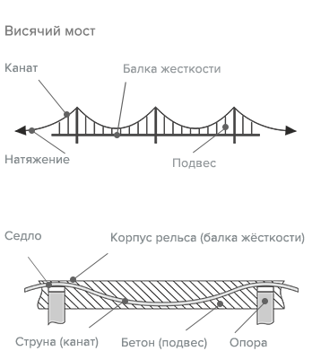

Вариант конструкции полужесткого струнного рельса
Мощность сопротивления качению колёс юнибуса масслой 5 000 кг при скорости движения 450 км/ч:
W к.к. = M • g • k к.к. • V = 5,000 кг • 9.81 м/с2 • 0.0015 • 125 м/c ≈ 9.2 кВтДля сравнения: при использовании пневмошин этот показатель равен
W к.к. ≈ 1,100 кВтСкорость движения:
от 30 (на опоре) до 150 км/чОтносительная жесткость конструкции:
1/100-1/500Радиус кривизны путевой структуры:
R=100(на опоре)...2,000 mНе является аналогом канатной дороги:
Скорость движения:
от 50 до 150 км/чОтносительная жесткость конструкции:
1/500-1/2,000Радиус кривизны путевой структуры:
R=500...5,000 mКонструкция путевой структуры повторяет конструкцию висячего моста, сочетая в себе все его основные элементы
Скорость движения:
от 100 до 500 км/чОтносительная жесткость конструкции:
1/1000-1/10,000Радиус кривизны путевой структуры:
R=5000...50,000 m